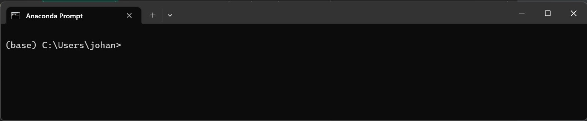
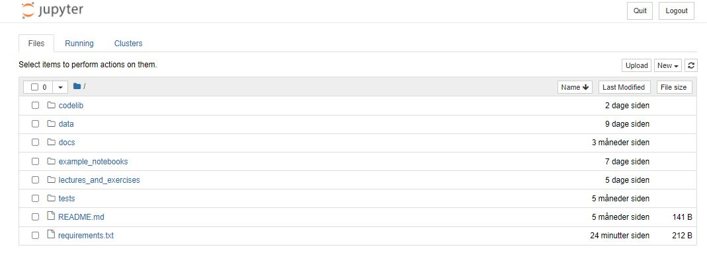
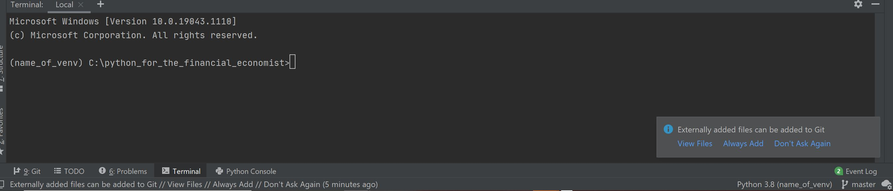
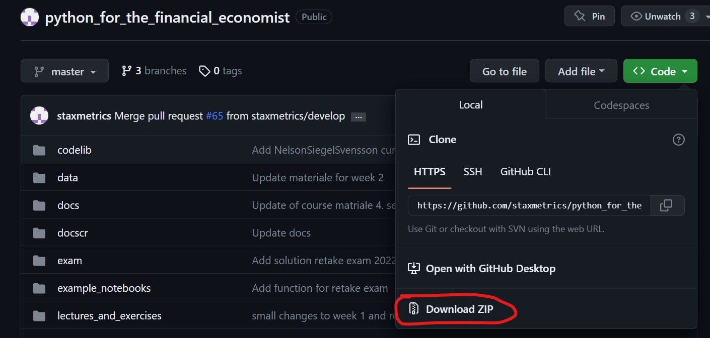

Getting started#
This note describes to get started with the course Python for the Financial Economist including installation of relevant software.
Most of the relevant course material can be found in the github repository.
There are several ways of starting working with the course material and coding in Python. I will use the Anaconda distribution, but feel free to do something else if you are used to something else.
Anaconda installation#
A simple way of getting started is to install Anaconda.
An installation guide can be found here.
After the installation, you will have access to the Anaconda Navigator and Anaconda Prompt from which you have access to jupyter notebooks or jupyter lab which will use predominately in the course.
Anaconda environment#
The Anaconda distribution comes with a base environment which comes with over 250 packages automatically installed and a large number of additional packages that can be individually installed (see here for more information).
In many cases, we would be able to work directly with the base environment, but this may lead to issues with different versions of Python packages, e.g. we need two different versions of a Python package for two different projects. The recommended approach is to create a new conda environment for each project (the course in this case).
We will create a new conda environment that contains the python packages used in the course. A guide can be found here.
YML file with environment specification#
The root of the github repository contains the yml file environment.yml which can be imported directly into Anaconda Navigator to create a new environment.
Jupyter notebooks#
Jupyter is a browser-based way of interacting with Python and is especially useful when working and interacting with data and want to visualize and do calculations on the fly. It is generally not suited for developing bigger applications.
We will be using Jupyter notebooks extensively during the course. All course material is presented in the form of notebooks.
Will will be able to launch Jupyter directly from the Anaconda Navigator by pushing the launch button at the Jupyter notebook icon (remember to select the correct environment).
Another method to open a Jupyter notebook is to use the Anaconda Prompt. It should looks something like this:
{kind=link}

(base) indicates that the base environment is activated. We can activate the relevant environment with
conda activate fin_econ_2023
After we have navigated to the desired folder, e.g.
cd C:\code\python_for_the_financial_economist
We can launch Jupyter with
jupyter notebook
If you run the command from the root of python_for_the_financial_economist, you should see something like
{kind=link}

Using IDEs#
We will primarily use jupyter notebooks for coding and analysis (one should be able to complete the course using only notebooks), but sometimes we need to utilize an IDE (integrated development environment) to write code.This will increase the productivity when writing e.g. code libraries. Some of the most used IDEs integrate easily with Anaconda (see here).
Visual Studio Code#
I will use the Visual Studio Code IDE in this course. It can be downloaded here.
For Python development, install the Python extension from the Extensions view in VS Code. This gives you code editing, linting, debugging and Jupyter support directly in the editor.
Feel free to use alternatives such as PyCharm or Spyder, but VS Code will be the default supported option.
Configuration of environment#
After you have opened the project, we need to configure the virtual environment. In VS Code, open the Command Palette with Ctrl+Shift+P, run Python: Select Interpreter, and choose the conda environment that you created for the course.
You can also check the selected environment in the terminal by opening a new terminal in VS Code. The prompt should show the active conda environment, e.g.
{kind=link}

Getting access to the course material#
The easiest way to obtain the course material is simply to download a zip folder from github repository.
{kind=link}

The problem with this approach is that you need to download the course material every time the course material is updated.
Using git to interact with Github#
Git enables us to interact directly with Github. Navigate to git download and download and install the newest release.
Cloning the github repository#
As mentioned, most of the relevant course material can be found in the github repository.
To clone the github repository (the master branch), open Git Bash and navigate to the folder where you want the local branch. I use the folder C:\code for repositories.
Open Git Bash and type
cd c:\code
git clone https://github.com/staxmetrics/python_for_the_financial_economist.git
Alternatively, it is also possible directly in VS Code via Source Control > Clone Repository.
Now you will have a local version of the github repository on your computer!
After you have cloned the github repository, open the folder in VS Code by using File > Open Folder. If this does not work, you can also open the project from the VS Code Explorer.
Pulling newest update to local repository#
I will continuously add new material to the github repository. To pull the newest version, you need to download it to your computer.
This can be done directly from VS Code via Source Control > Pull (on a Windows machine). Alternatively, one could do it using git bash.
Folder structure#
The folder structure is presented below.
python_for_the_financial_economist
├── codelib
│ ├── dal
│ └── statistics
│ └── visualization
├── data
├── docs
├── examples_notebooks
├── lectures_and_exercises
├── tests
└── requirements.txt
Access virtual environment in Jupyter notebook#
To be able to access the virtual environment from a Jupyter notebook, we need run the following command in the terminal
python -m ipykernel install --user --name=name_of_venv
See e.g. this blog for further details.
Working with your own code and notebooks#
There are several possibilities to work with your own code including
A folder with code and notebooks#
The simplest approach will be to simple have a folder somewhere on your computer with notebooks and scripts.
New branch in the repository#
You may make a new branch in the repository python_for_the_financial_economist. You will then have to merge changes to the master branch into your own branch to have the newest material.
New repository#
You can create your own repository.